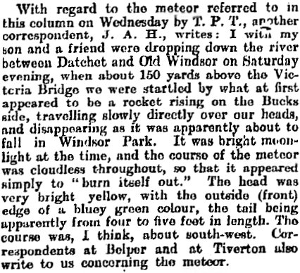

L'article d'origine
 |
With regard to the meteor referred to in this column on Wednesday by T. P. T., another
correspondent, J. A. H., writes: I with my son and a friend were dropping down the river between Datchet and Old
Windsor on Saturday evening, when about 150 yards above the Victoria Bridge we were startled by what at first
appeared to be a rocket rising on the Bucks side, travelling slowly directly over our heads, and disappearing as it
was apparently about to fall in Windsor Park. It was bright moonlight at the time, and the course of the meteor was
cloudless throughout, so that it appeared simply to "burn itself out." The head was very bright yellow, with the
outside (front) edge of a bluey green colour, the tail being apparently from four to five feet in length. The course
was, I think, about south-west. Correspondents at Belper and at Tiverton also write us concerning the meteor.